4 Turing Machines¶
说明
本文档仅涉及部分内容，仅可用于复习重点知识
1 The Definition of A Turing Machine¶
本质上，一台 Turing machines 由一个有限状态控制单元和一条纸带组成。两者之间的通信由一个单独的磁头提供，该磁头从纸带上读取符号，也用于更改纸带上的符号。控制单元以离散的步骤运行；在每一步，它根据其当前状态和读/写磁头当前扫描到的纸带符号来执行两个功能：
- 将控制单元置于一个新状态
-
执行以下操作之一：
- 在当前扫描的纸带方格中写入一个符号，替换掉已有的符号
- 将读/写磁头向左或向右移动一个纸带方格
纸带有一个左端，但向右无限延伸。为了防止机器将其磁头移出纸带的左端，我们假设纸带的最左端总是由一个特殊符号 \(\rhd\) 标记；我们进一步假设，我们所有的图灵机都是这样设计的：每当磁头读到 \(\rhd\) 时，它立即向右移动。此外，我们将使用不同的符号 ← 和 → 分别表示磁头向左或向右移动；我们假设这两个符号不属于我们考虑的任何字母表
通过将输入字符串刻写在纸带左端、紧邻 \(\rhd\) 符号右侧的纸带方格上，为图灵机提供输入。纸带的其余部分最初包含 blank 符号，记为 \(\sqcup\)。机器可以按其认为合适的任何方式自由改变其输入，并可以在右侧无限的空白纸带部分进行写入。由于机器一次只能将其磁头移动一个方格，在任何有限次的计算之后，只有有限多个纸带方格会被访问到
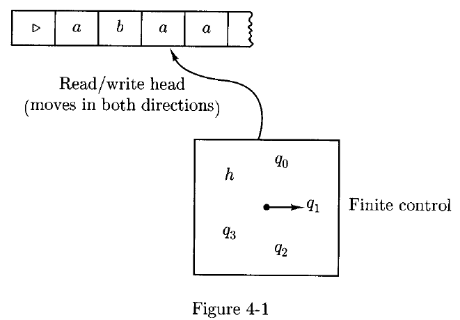
A Turing machine is a quintuple \((K,\Sigma,\delta,s,H)\), where
- \(K\) is a finite set of states
- \(\Sigma\) is an alphabet, containing the blank symbol \(\sqcup\) and the left end symbol \(\rhd\), but not containing the symbols \(\leftarrow\) and \(\rightarrow\)
- \(s \in K\) is the initial state
- \(H \subseteq K\) is the set of halting states
-
\(\delta\), the transition function, is a function from \((K-H)\times \Sigma\) to \(K \times (\Sigma \cup \lbrace\leftarrow, \rightarrow \rbrace)\) such that
- for all \(q \in K - H\), if \(\delta(q,\rhd) = (p,b)\), then \(b = \rightarrow\)
- for all \(q \in K - H\) and \(a \in \Sigma\), if \(\delta(q,a) = (p,b)\), then \(b \not ={ \rhd}\)
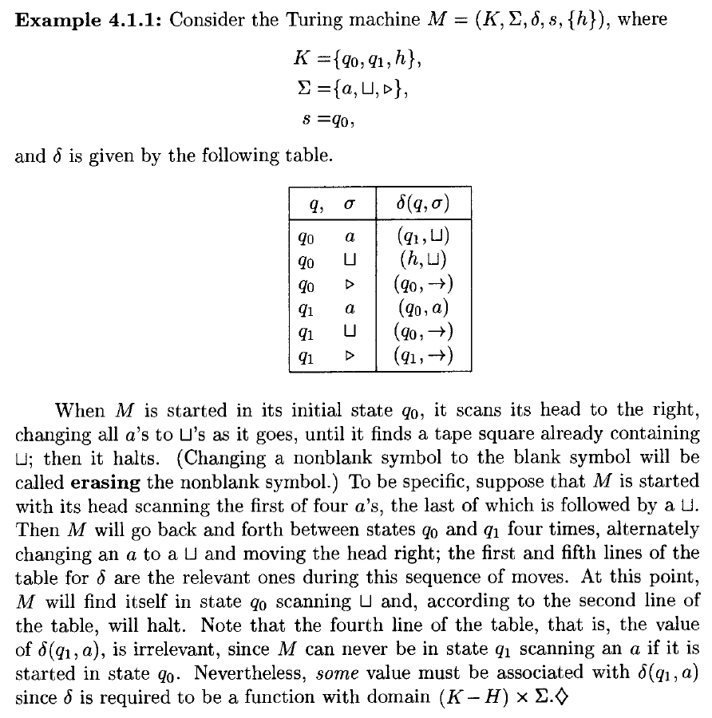
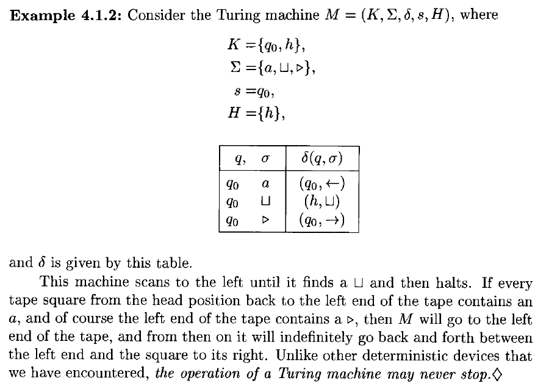
A configuration of a Turing machine \(M = (K,\Sigma,\delta,s,H)\) is a member of \(K \times \rhd \Sigma^* \times (\Sigma^*(\Sigma - \lbrace \sqcup \rbrace) \cup \lbrace e\rbrace)\)
- 第一个位置：表示图灵机当前的状态
- 第二个位置：表示从纸带左端开始，到当前磁头所在位置（包含该位置符号）为止的字符串
- 第三个位置：表示从当前磁头所在位置的下一个位置开始，直到最后一个非空白符号为止的字符串
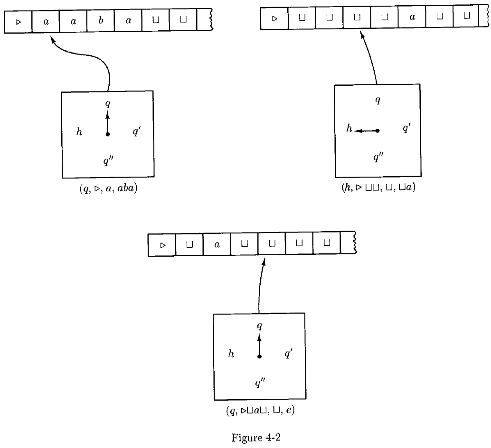
上图中三个图灵机当前的配置如下
- \((q, \rhd a, aba)\)
- \((h, \rhd\sqcup\sqcup\sqcup, \sqcup a)\)
- \((q, \rhd \sqcup a \sqcup\sqcup, e)\)
也可以这样表示配置：\((q, \rhd \underline{a}aba)\), \((h, \rhd\sqcup\sqcup \underline{\sqcup}\sqcup a)\), \((q, \rhd \sqcup a \sqcup \underline{\sqcup})\)，下划线表示当前磁头所在的位置
考虑两个配置 \((q_1, w_1\underline{a_1}u_1)\), \((q_2, w_2\underline{a_2}u_2)\)，那么 \((q_1, w_1\underline{a_1}u_1) \vdash_M (q_2, w_2\underline{a_2}u_2)\) 当且仅当对于某个 \(b \in \Sigma \cup \lbrace\leftarrow,\rightarrow\rbrace\)，有 \(\delta(q_1, a_1) = (q_2, b)\)，并且满足下列情况之一：
- \(b \in \Sigma, w_1 = w_2, u_1 = u_2, a_2 = b\)
-
\(b = \leftarrow, w_1 = w_2a_2\)，并且
- \(u_2 = a_1u_1\)，如果 \(a_1 \not ={\sqcup}\) 或 \(u_1 \not ={e}\)，或者
- \(u_2 = e\)，如果 \(a_1 = \sqcup\) 且 \(u_1 = e\)
-
\(b = \rightarrow, w_2 = w_1a_1\)，并且
- \(u_1 = a_2u_2\)，或者
- \(u_1 = u_2 = e\) 且 \(a_2 = \sqcup\)
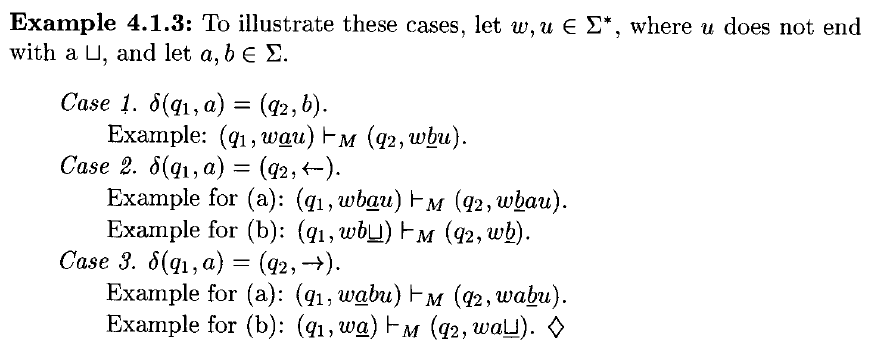
令 \(\vdash_M^*\) 是 \(\vdash_M\) 的 reflexive, transitive 闭包
我们说配置 \(C_1\) yield 配置 \(C_2\) 如果 \(C_1 \vdash_M^* C_2\)
一个 computation 是一些配置的序列 \(C_0 \vdash_M C_1 \vdash_M \cdots \vdash_M C_n\)。称这个计算 length 为 \(n\) 或有 \(n\) steps，写作 \(C_0 \vdash_M^n C_n\)
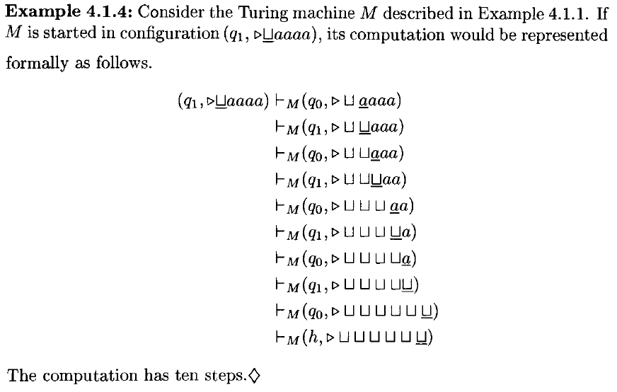
1.1 A Notation for Turing Machines¶
定义一个非常简单的 basic machines 库，以及组合机器的规则
symbol-writing machines and head-moving machines：固定机器的字母表 \(Σ\)。对于每个 \(a ∈ Σ ∪ \lbrace →, ← \rbrace − \lbrace\rhd\rbrace\)，定义一台图灵机 \(M_a = (\lbrace s, h \rbrace, Σ, δ, s, \lbrace h \rbrace)\)，其中对每个 \(b ∈ Σ − \lbrace \rhd\rbrace\)，\(δ(s,b) = (h,a)\)。自然地，\(δ(s,\rhd)\) 仍然是 \((s, →)\)。也就是说，这台机器的作用只是执行动作 \(a\)：如果 \(a ∈ Σ\)，则写入符号 \(a\)；如果 \(a ∈ \lbrace←, →\rbrace\)，则按 \(a\) 指示的方向移动，然后立即停止。当然，这个行为有一个例外情况：如果扫描到的符号是 \(\rhd\)，那么机器会向右移动
由于符号写入机器被频繁使用，我们简化其名称，直接用 \(a\) 代替 \(M_a\)。也就是说，若 \(a ∈ Σ\)，则 a-writing machine 简记为 \(a\)。头移动机器 \(M_←\) 和 \(M_→\) 将分别简记为 \(L\) 和 \(R\)
图灵机将以一种类似于有限自动机结构的方式进行组合。单个机器就像有限自动机的状态，机器之间可以像有限自动机的状态之间那样相互连接。然而，从一台机器到另一台机器的连接不会在第一台机器停止之前执行；只有当第一台机器停止后，第二台机器才会从其初始状态开始运行，此时磁带和读写头的位置由第一台机器留下的状态决定
因此，如果 \(M₁\)、\(M₂\) 和 \(M₃\) 是图灵机，则下图所示的机器按如下方式工作：从 \(M₁\) 的初始状态开始；按照 \(M₁\) 的方式运行，直到 \(M₁\) 停止；然后，如果当前扫描的符号是 \(a\)，则启动 \(M₂\) 并按照 \(M₂\) 的方式运行；否则，如果当前扫描的符号是 \(b\)，则启动 \(M₃\) 并按照 \(M₃\) 的方式运行
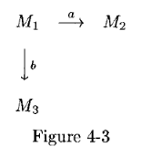
假设上图三个图灵机 \(M₁\)、\(M₂\) 和 \(M₃\) 分别为：\(M₁ = (K₁, Σ, δ₁, s₁, H₁)\)，\(M₂ = (K₂, Σ, δ₂, s₂, H₂)\)，\(M₃ = (K₃, Σ, δ₃, s₃, H₃)\)，那么上图所示的组合机器就是 \(M = (K, Σ, δ, s, H)\)
- \(K = K₁ ∪ K₂ ∪ K₃\)
- \(s = s₁\)
- \(H = H₂ ∪ H₃\)
对于每个 \(σ ∈ Σ\) 和 \(q ∈ K − H\)，\(δ(q, σ)\) 的定义如下：
- 如果 \(q ∈ K₁ − H₁\)，则 \(δ(q, σ) = δ₁(q, σ)\)
- 如果 \(q ∈ K₂ − H₂\)，则 \(δ(q, σ) = δ₂(q, σ)\)
- 如果 \(q ∈ K₃ − H₃\)，则 \(δ(q, σ) = δ₃(q, σ)\)
-
如果 \(q ∈ H₁\)
- 若 \(σ = a\)，则 \(δ(q, σ) = s₂\)
- 若 \(σ = b\)，则 \(δ(q, σ) = s₃\)
- 否则 \(δ(q, σ) ∈ H\)（没得变了就停止机器）
实际上就是以数学形式描述了状态转换
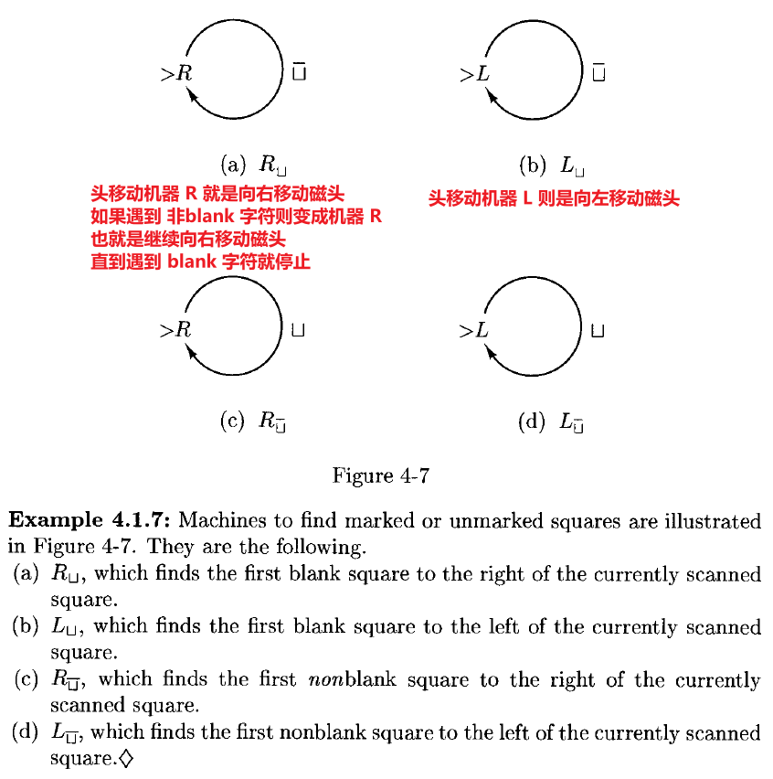
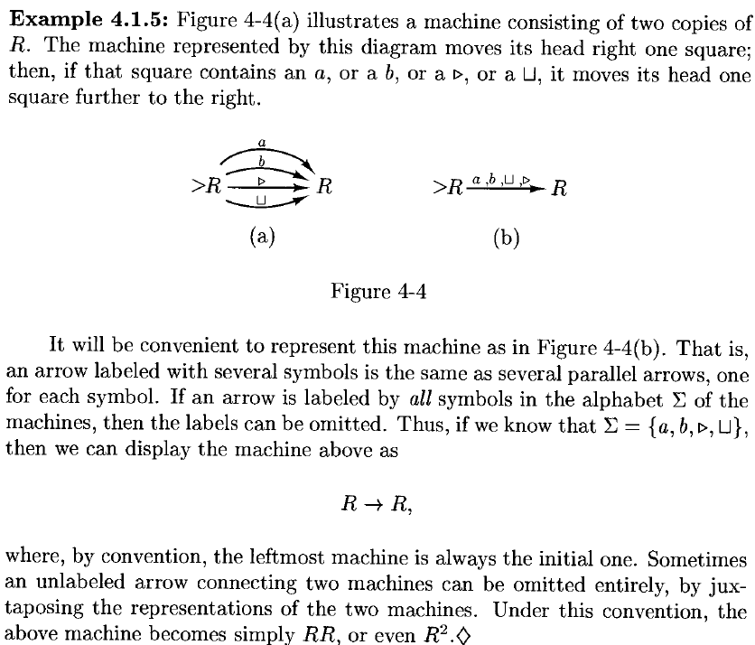
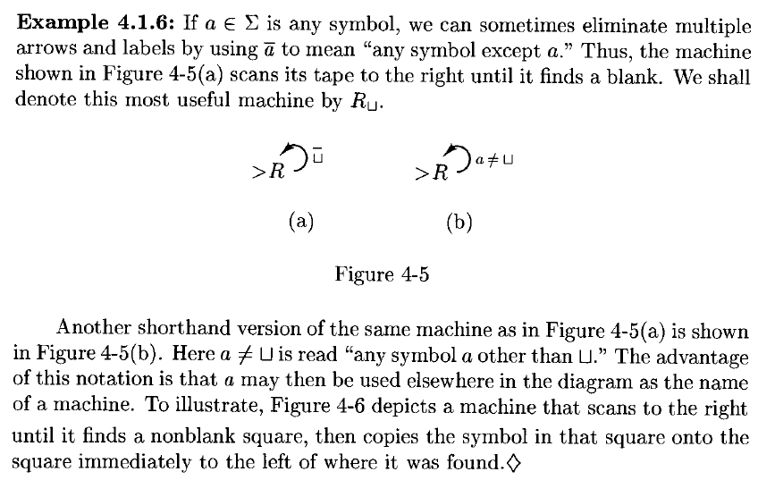
copying machine \(C\)：将 \(\sqcup w \underline{\sqcup}\) 变成 \(\sqcup w \sqcup w \underline{\sqcup}\)（\(w\) 中不能有 \(\sqcup\) 字符）
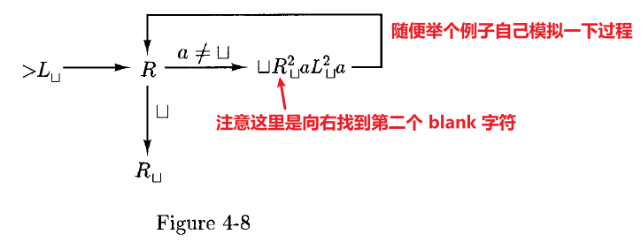
right-shifting machine \(S_\rightarrow\)：将字符串 \(\sqcup w \underline{\sqcup}\) 变成 \(\sqcup \sqcup w \underline{\sqcup}\)（\(w\) 中不能有 \(\sqcup\) 字符）
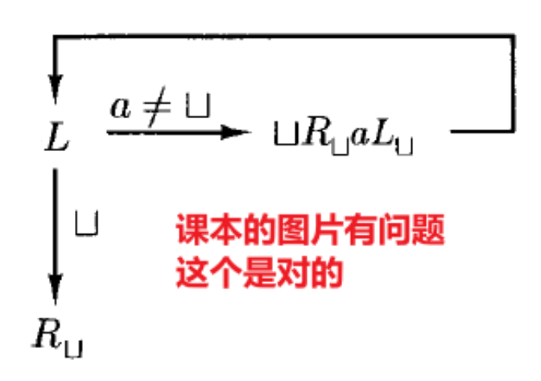
同理有 left-shifting machine
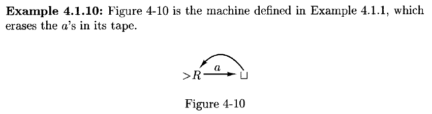
2 Computing with Turing Machines¶
我们采用以下策略来向图灵机提供输入：输入字符串（不含空白符号）写在最左侧符号 \(\rhd\) 的右侧，其左侧有一个空白，右侧也有空白；读写头位于 \(\rhd\) 与输入之间的空白方格上；机器从初始状态开始运行。如果 \(M = (K, \Sigma, \delta, s, H)\) 是一台图灵机，且 \(w \in (\Sigma - \lbrace \sqcup, \rhd\rbrace)^*\)，那么 \(M\) 在输入 \(w\) 上的 initial configuration 是 \((s, \rhd \underline{\sqcup}w)\)
设 \(M=(K,Σ,δ,s,H)\) 是一台图灵机，其中停机状态集合 \(H=\lbrace y,n \rbrace\) 包含两个不同的停机状态（\(y\) 表示是，\(n\) 表示否）。任何停机配置，若其状态分量为 \(y\)，称为一个 accepting configuration；若其状态分量为 \(n\)，则称为一个 rejecting configuration。我们说 \(M\) accepting 输入 \(w∈(Σ−\lbrace⊔,▹\rbrace)^∗\)，当且仅当 \((s,▹\underline{⊔}w)\) 导致一个接受配置；类似地，我们说 \(M\) reject 输入 \(w\)，当且仅当 \((s,▹\underline{⊔}w)\) 导致一个拒绝配置
设 \(\Sigma_0 \in \Sigma - \lbrace \sqcup, \rhd\rbrace\) 为一个字母表，称为 \(M\) 的 input alphabet；通过将 \(Σ_0\) 固定为 \(Σ−\lbrace⊔,▹\rbrace\) 的一个子集，我们允许图灵机在计算过程中使用除输入中出现的符号之外的额外符号。我们说 \(M\) decide 一个语言 \(L⊆Σ_0^*\)，当且仅当对于任意字符串 \(w \in \Sigma_0^*\)，满足以下条件：如果 \(w∈L\)，则 \(M\) 接受 \(w\)；如果 \(w\notin L\)，则 \(M\) 拒绝 \(w\)
称一个语言 L 为 recursive（递归的），如果存在一台图灵机能判定它
换句话说，一台图灵机判定一个语言 \(L\)，意味着当以输入 \(w\) 启动时，它总是会停止，并且在正确的停机状态中停止：如果是 \(y\)，则 \(w∈L\)；如果是 \(n\)，则 \(w\notin L\)。请注意，如果输入包含空白或左端符号，则不保证会发生什么
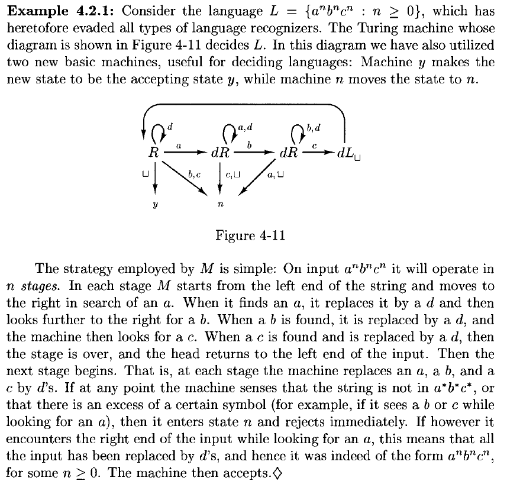
2.1 Recursive Functions¶
设 \(M=(K,Σ,δ,s,\lbrace h\rbrace)\) 是一台图灵机，令 \(Σ_0⊆Σ−\lbrace⊔,▹\rbrace\) 为一个字母表，且 \(w∈Σ_0^∗\)。假设 \(M\) 在输入 \(w\) 上停止，并且存在某个 \(y∈Σ_0^∗\)，使得从初始配置 \((s,▹\underline{⊔}w)\) 出发，经过若干步后进入停机配置 \((h,▹\underline{⊔}y)\)。那么称 \(y\) 为 \(M\) 在输入 \(w\) 上的输出，记作 \(M(w)\)。注意，\(M(w)\) 只有在 \(M\) 在输入 \(w\) 上停止时才被定义，而且实际上必须是在形如 \((h,▹\underline{⊔}y)\) 的配置中停止，其中 \(y∈Σ_0^∗\)
现在设 \(f\) 是从 \(\Sigma_0^*\) 到 \(\Sigma_0^*\) 的任意函数。我们说图灵机 \(M\) compute 函数 \(f\)，如果对所有 \(w∈\Sigma_0^*\)，都有 \(M(w)=f(w)\)。也就是说，对于所有 \(w∈\Sigma_0^*\)，当 \(M\) 在输入 \(w\) 上运行时，最终会停止，且其磁带包含字符串 \(▹⊔f(w)\)。若存在一台图灵机 \(M\) 能计算函数 \(f\)，则称函数 \(f\) 为 recursive
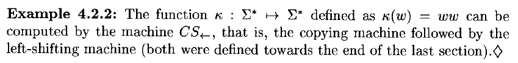
集合 \(\lbrace0,1\rbrace^∗\) 中的字符串可以用熟悉的二进制表示法来表示非负整数。任意字符串 \(w = a_1a_2 \cdots a_n \in \lbrace 0,1 \rbrace^*\) 表示的数值为：\(num(w) = a_1 \cdot 2^{n-1} + a_2 \cdot 2^{n-2} + \cdots + a_n\)。并且，任何自然数都可以通过一个形如 \(0∪1(0∪1)^∗\) 的字符串唯一地表示，也就是说，不包含前导零（即开头多余的 \(0\)）
因此，计算从 \(\lbrace0,1\rbrace^∗\) 到 \(\lbrace0,1\rbrace^∗\) 的函数的图灵机，可以被看作是计算从自然数到自然数的函数。事实上，具有多个参数的数值函数，例如加法和乘法，可以通过图灵机来计算，这些图灵机计算的是从 \(\lbrace 0,1,; \rbrace^*\) 到 \(\lbrace 0,1\rbrace^*\)，其中 \(;\) 是一个用于分隔二进制参数的符号
设 \(M=(K,Σ,δ,s,\lbrace h\rbrace)\) 是一台图灵机，其中符号 \(0,1,;∈Σ\)，令 \(f\) 是从 \(N^k\) 到 \(N\) 的任意函数（对某个 \(k≥1\)）。我们说图灵机 \(M\) 计算函数 \(f\)，如果对于所有 \(w_1, \cdots, w_k \in 0 \cup 1 (0 \cup 1)^*\)（即，任何 \(k\) 个整数的二进制编码字符串），都有：\(num(M(w_1;\cdots;w_k)) = f(num(w_1), \cdots, num(w_k))\)
也就是说，如果 \(M\) 以整数 \(n_1,\cdots,n_k\) 的二进制表示作为输入，则它最终会停止，并且当它停止时，其磁带上包含一个表示数值 \(f(n_1,\cdots,n_k)\) 的字符串，即该函数的值。若存在一台图灵机 \(M\) 能计算函数 \(f\)，则称函数 \(f: N^k \rightarrow N\) 为 recursive
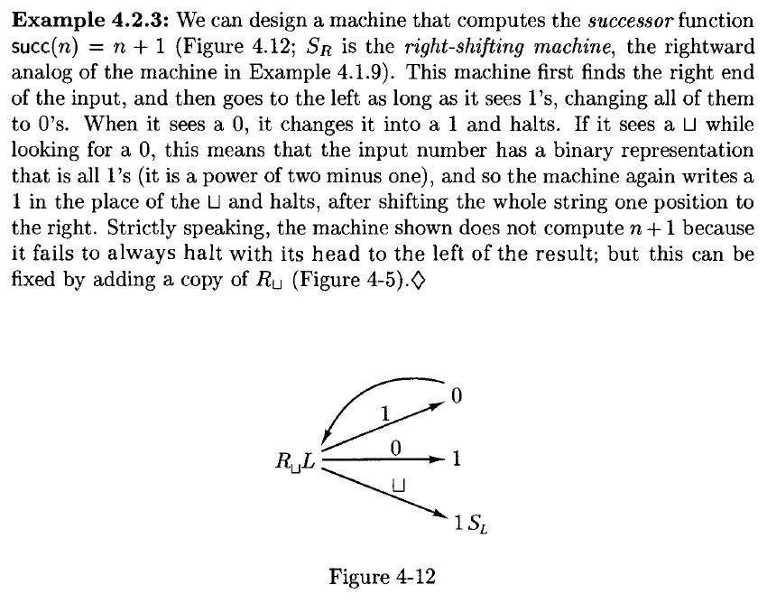
2.2 Recursively Enumerable Languages¶
设 \(M=(K,Σ,δ,s,H)\) 是一台图灵机，令 \(Σ_0⊆Σ−{⊔,▹}\) 为一个字母表，并设 \(L⊆Σ_0^∗\) 为一种语言。我们说 \(M\) semidecides（半判定）语言 \(L\)，当且仅当对于任意字符串 \(w∈Σ_0^∗\)，以下条件成立：\(w∈L\) 当且仅当 \(M\) 在输入 \(w\) 上停机
一个语言 \(L\) 是 recursively enumerable（递归可枚举），当且仅当存在一台图灵机 \(M\) 能够半判定 \(L\)
因此，当 \(M\) 接收到输入 \(w∈L\) 时，它必须最终停机。我们并不关心它具体进入哪个停机状态，只要它最终达到某个停机配置即可。然而，如果 \(w∈Σ_0^∗ − L\)，则 \(M\) 永远不能进入停机状态
我们记 \(M(w)=↗\) 表示 \(M\) 在输入 \(w\) 上无法停机。在此记法下，我们可以将图灵机 \(M\) 半判定语言 \(L⊆Σ_0^∗\) 的定义重述如下：对所有 \(w∈Σ_0^∗\)，有 \(M(w)=↗\) 当且仅当 \(w\notin L\)
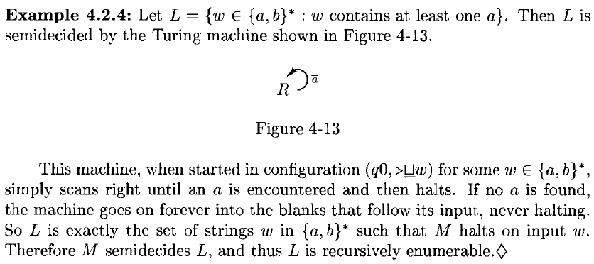
如果一个语言是 recursive 的，那么它也是 recursively enumerable 的
存在 recursively enumerable 但是不 recursive 的语言
证明
要构造一台半判定（而不是判定）该语言的图灵机，只需将原判定机中的拒绝状态变为非停机状态，从而确保机器永远不会停机。具体来说，给定任意一台判定语言 \(L\) 的图灵机 \(M=(K,Σ,δ,s,\lbrace y,n \rbrace)\)，我们可以定义一台半判定 \(L\) 的新机器 \(M'\) 如下：\(M' = (K,Σ,\delta',s,\lbrace y\rbrace)\)，其中 \(\delta'\) 是 \(δ\) 的扩展，增加如下转移规则：对所有 \(a∈Σ\)，有 \(\delta'(n,a) = (n,a)\) —— 即状态 \(n\) 不再是停机状态。显然，如果 \(M\) 确实能判定 \(L\)，那么 \(M'\) 就能半判定 \(L\)，因为 \(M'\) 接受与 \(M\) 相同的输入；此外，如果 \(M\) 拒绝输入 \(w\)，则 \(M'\) 在 \(w\) 上不会停机（它在状态 \(n\) 中永远循环）。换句话说，对于所有输入 \(w\)，有 \(M'(w)=↗\) 当且仅当 \(M(w)=n\)
如果语言 \(L\) 是 recursive 的，那么 \(\bar{L}\) 也是 recursive 的
3 Extensions of the Turing Machine¶
3.1 Multiple Tapes¶
可以设想具有多个磁带的图灵机，每条磁带通过一个读 / 写头与有限控制器相连（每条磁带有一个读 / 写头）。在一步操作中，机器可以读取所有读 / 写头所扫描的符号，然后根据这些符号及其当前状态，重写某些被扫描的方格，并将某些读 / 写头向左或向右移动，同时改变自身状态
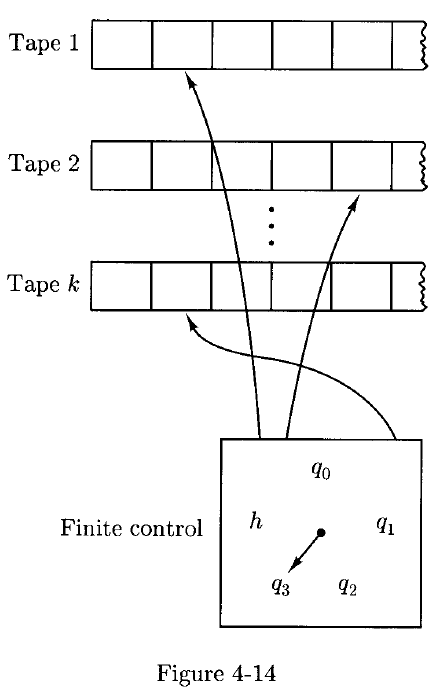
设 \(k≥1\) 为一个整数。一个 \(k\) - tape Turing machine 是一个五元组 \((K,Σ,δ,s,H)\)，其中 \(K\)、\(Σ\)、\(s\) 和 \(H\) 的含义与普通图灵机的定义相同，而 \(δ\)（transition function）是从 \((K-H)\times \Sigma^k\) 到 \(K\times(\Sigma\cup \lbrace \leftarrow,\rightarrow \rbrace)^k\) 的一个函数。也就是说，对于每个状态 \(q\)，以及每个由磁带符号组成的 \(k\) - 元组 \((a_1, \cdots, a_k)\)，有 \(\delta(q,(a_1, \cdots, a_k)) = (p,(b_1, \cdots, b_k))\)，其中 \(p\) 是新的状态，而 \(b_j\) 直观上表示机器在第 \(j\) 条磁带上的动作。自然地，我们再次要求：如果对某个 \(j≤k\) 有 \(a_j = \rhd\)，则必须有 \(b_j = \rightarrow\)
设 \(M = (K,Σ,δ,s,H)\) 是一个 \(k\)-tape 图灵机，\(M\) 的 configuration 是 \(K \times (\rhd \Sigma^* \times (\Sigma^*(\Sigma-\lbrace \sqcup \rbrace) \cup \lbrace e\rbrace))^k\) 的一个成员
例如，\(\delta(p,(a_1, \cdots, a_k)) = (b_1, \cdots, b_k)\)，配置 \((q,(w_1\underline{a_1}u_1, \cdots, w_k\underline{a_k}u_k))\) yields in one step 配置 \((q,(w_1'\underline{a_1'}u_1', \cdots, w_k'\underline{a_k'}u_k'))\)，其中 \(a_i'\) 是 \(a_i\) 经过操作 \(b_i\) 后变成的
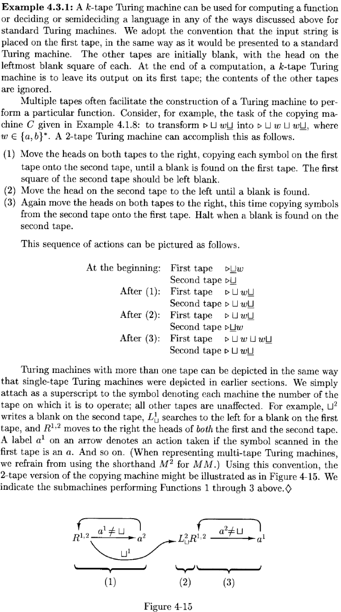
设 \(M=(K,Σ,δ,s,H)\) 是一个 \(k\)-磁带图灵机，其中 \(k≥1\)。那么存在一台标准图灵机 \(M' = (K',\Sigma',\delta',s',H)\)，满足 \(Σ⊆\Sigma'\)，并且以下性质成立：对于任意输入字符串 \(x\in \Sigma^*\)，机器 \(M\) 在输入 \(x\) 上停机并输出 \(y\)（在第一条磁带上），当且仅当 \(M'\) 在输入 \(x\) 上停机、处于相同的停机状态，并在其磁带上输出相同的 \(y\)。此外，如果 \(M\) 在输入 \(x\) 上经过 \(t\) 步后停机，则 \(M'\) 在输入 \(x\) 上经过的步数为 \(O(t⋅(|x|+t))\)
任何由 \(k\)-磁带图灵机计算的函数，或由 \(k\)-磁带图灵机判定（或半判定）的语言，也分别可以由一台标准图灵机计算、判定（或半判定）
6 Grammars¶
一个 grammar（或 unrestricted grammar，或 rewriting system）是一个四元组 \(G=(V,Σ,R,S)\)，其中：
- \(V\) 是一个字母表
- \(Σ⊆V\) 是 terminal symbols 的集合，而 \(V−Σ\) 被称为 nonterminal symbols 的集合
- \(S∈V−Σ\) 是 start symbol
- \(R\)，即 rules 的集合，是 \((V^* (V−Σ)V^∗)×V^∗\)的有限子集
我们写作 \(u→v\) 如果 \((u,v)∈R\)
我们写作 \(u \Rightarrow_G v\) 当且仅当，对于某些 \(w_1, w_2 \in V^*\) 和某个规则 \(u' \rightarrow v' \in R\)，有 \(u = w_1u'w_2\) 且 \(v = w_1v'w_2\)
通常，\(\Rightarrow^*_G\) 是 \(\Rightarrow_G\) 的自反传递闭包。一个字符串 \(w \in \Sigma^*\) 由 \(G\) 生成，当且仅当 \(S \Rightarrow_G^* w\)
而 \(L(G)\)，即由 \(G\) 生成的语言，是由 \(G\) 生成的所有 \(Σ^∗\) 中字符串的集合
我们也使用最初为上下文无关文法引入的其他术语；例如，一个 derivation 是一系列形式为 \(w_0 \Rightarrow_G w_1 \Rightarrow_G \cdots \Rightarrow_G w_n\)
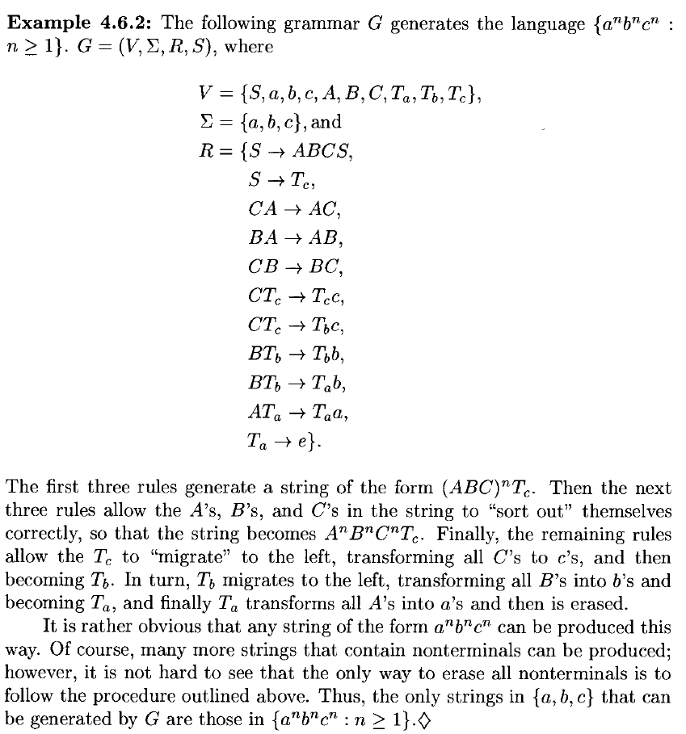
A language is generated by a grammar if and only if it is recursively enumerable
设 \(G=(V,Σ,R,S)\) 是一个文法，且设 \(f:\Sigma^* \rightarrow \Sigma^*\) 是一个函数。我们说 \(G\) 计算 \(f\)，如果对于所有 \(w,v\in \Sigma^*\)，以下条件成立：\(SwS \Rightarrow^*_G v \text{ if and only if }v=f(w)\)
也就是说，由输入字符串 \(w\) 构成的字符串，其两边各有一个文法 \(G\) 的开始符号 \(S\)，经过推导后恰好生成一个在 \(\Sigma^*\) 中的字符串：即 \(f(w)\) 的正确值
一个函数 \(f:\Sigma^* \rightarrow \Sigma^*\) 被称为 grammatically computable ，当且仅当存在一个文法 \(G\) 能够计算它
A function \(f:\Sigma^* \rightarrow \Sigma^*\) is recursive if and only if it is grammatically computable
7 Numerical Functions¶
课本原文 AI 翻译
让我们现在采用一种完全不同的计算观点，这种观点不基于任何明确的计算或信息处理形式化体系（例如图灵机或文法），而是专注于需要计算的内容：从数字到数字的函数。例如，显然对于任意给定的 \(m\) 和 \(n\) 值，函数 \(f(m,n)=m\cdot n^2+3\cdot m^{2\cdot m + 17}\) 都可以被计算出来，因为它是可计算函数——加法、乘法和幂运算，再加上一些常数——的组合。那么我们如何知道幂运算可以被计算呢？因为它可以通过一个更简单的函数（即乘法）以及较小参数下的值来递归定义。毕竟，当 \(n = 0\) 时，\(m^n=1\)；否则，\(m^n=m\cdot m^{n-1}\)。而乘法本身也可以通过加法递归地定义——依此类推
从原理上讲，我们应该 从自然数到自然数 的函数开始，这些函数非常简单，以至于它们毫无疑问是可计算的（例如恒等函数和后继函数 \(succ(n)=n+1）\)，然后通过一些同样非常基础且显然可计算的组合方式（如函数复合和递归定义），缓慢而耐心地将它们组合起来，最终得到一类既广泛又非平凡的从数字到数字的函数。在本节中，我们将进行这一练习。值得注意的是，这样定义的“计算”概念将被证明与本章其他方法（如图灵机、其变体以及文法）所达到的概念完全一致，尽管这些方法在精神、范围和细节上都大相径庭
Definition 4.7.1
我们首先定义一些从 \(N^k\) 到 \(N\) 的极其简单的函数，其中 \(k≥0\)（一个 0 元函数当然就是一个常数，因为它没有任何依赖变量）。这些 basic functions 包括以下几种：
- 对任意 \(k≥0\)，k-ary zero function 定义为：\(zero_k(n_1,\cdots,n_k) = 0\) 对所有 \(n_1,\cdots,n_k \in N\) 成立
- 对任意 \(k≥j>0\)，j th k-ary identity function 定义为：\(id_{k,j}(n_1,\cdots,n_k) = n_j\) 对所有 \(n_1,\cdots,n_k \in N\) 成立
- successor function 定义为：\(succ(n)=n+1\) 对所有 \(n∈N\) 成立
接下来，我们引入两种简单的方法，通过组合函数来构造稍微复杂一些的函数：
(1) 设 \(k,ℓ≥0\)，令 \(g:N^k\rightarrow N\) 是一个 \(k\) 元函数，且 \(h_1,\cdots,h_k\) 是 \(ℓ\) 元函数。那么，\(g\) 与 \(h_1,\cdots,h_k\) 的 composition 函数是一个 \(ℓ\) 元函数，定义为：\(f(n_1,\cdots,n_ℓ)=g(h_1(n_1,\cdots,n_ℓ),\cdots,h_k(n_1,\cdots,n_ℓ))\)
(2) 设 \(k≥0\)，令 \(g\) 是一个 \(k\) 元函数，\(h\) 是一个 \((k+2)\) 元函数。那么，由 \(g\) 和 \(h\) recursively 定义的函数 \(f\) 是一个 \((k+1)\) 元函数，定义如下：
对所有 \(n_1,\cdots,n_k,m \in N\) 成立
primitive recursive functions 是指所有基本函数，以及通过任意多次应用复合和递归定义所得到的所有函数
\(plus2(n) = n + 2\)
\(plus2\) 是原始递归函数
\(plus2(n) = succ(succ(n))\)
\(plus(m, n) = m + n\)
\(mult(m, n) = m \cdot n\)
\(exp(m, n) = m^n\)
constant functions
所有常数函数都是原始递归的，因为它们可以通过将一个适当的零函数与后继函数复合得到
例如 \(f(n_1,\cdots,n_k) = 17\) 需要复合 17 次
\(sgn(n)\)
为了提高可读性，使用
- \(m+n\) 代替 \(plus(m,n)\)
- \(m⋅n\) 代替 \(mult(m,n)\)
- \(m↑n\) 代替 \(exp(m,n)\)
因此，像 \(m\cdot(n+m^2)+178^m\) 这样的数值函数也是原始递归的，因为它们是通过上述基本函数经过连续复合得到的
由于我们限定在自然数范围内，无法实现真正的减法和除法。然而，我们可以定义一些有用的类似函数
\(m\sim n = \max\lbrace m-n,0\rbrace\)
定义 predecessor（前驱）函数：
由此我们可以得到非负减法函数：
很明显，对于给定的参数值，我们可以计算任意原始递归函数的值。同样显而易见的是，我们可以判断关于数字的断言是否成立，例如：\(m⋅n>m^2+n+7\)，对于任意给定的 \(m\) 和 \(n\) 值
为了方便，我们将一个 primitive recursive predicate 定义为仅取值 0 或 1 的原始递归函数。直观上，一个原始递归谓词（如 \(\text{greater-than}(m,n)\)）可以表达两个数 \(m\) 和 \(n\) 之间可能成立也可能不成立的关系。如果该关系成立，则原始递归谓词的值为 1；否则为 0
原始递归谓词
函数 \(iszero\)：当 \(n=0\) 时值为 \(1\)，当 \(n>0\) 时值为 \(0\)，是一个原始递归谓词，其递归定义如下：
类似地，有函数 \(isone\)
\(positive(n)\) 与之前定义的 \(sgn(n)\) 是相同的
不小于关系 \(\text{greater-than-or-equal}(m,n)\)（记作 \(m≥n\)）可以定义为 \(iszero(n∼m)\)
它的 negation（否定），即小于关系 \(\text{less-than}(m,n)\)，自然就是 \(1∼\text{greater-than-or-equal}(m,n)\)
一般来说，任意原始递归谓词的否定仍然是一个原始递归谓词。事实上，两个原始递归谓词的 disjunction 和合取 conjunction 也是原始递归谓词：
- \(p(m,n)\ or\ q(m,n) = 1 \sim iszero(p(m,n) + q(m,n))\)
- \(p(m,n)\ and\ q(m,n) = 1 \sim iszero(p(m,n) \cdot q(m,n))\)
\(equals(m,n)\)
相等谓词 \(equals(m,n)\) 可以定义为 \(\text{greater-than-or-equal}(m,n)\) 和 \(\text{greater-than-or-equal}(n,m)\) 的 conjunction
此外，如果 \(f\) 和 \(g\) 是原始递归函数，\(p\) 是一个原始递归谓词，且三者具有相同的元数 \(k\)，那么 function defined by cases
也是原始递归的，因为它可以重写为：\(f(n_1,\cdots,n_k) = p(n_1,\cdots,n_k)g(n_1,\cdots,n_k) + (1 \sim p(n_1,\cdots,n_k))h(n_1,\cdots,n_k)\)
\(rem(m,n)\)
\(div(m,n)\)
\(digit(m,n,p)\)
\(digit(m,n,p)\) 表示数 \(n\) 在以 \(p\) 为底的进制表示中，从右往左数第 \(m\) 个最低位数字。它也是原始递归函数
\(div(rem(n,p\uparrow m), p \uparrow (m-1))\)
\(odd(n)\)
谓词 \(odd(n) = digit(1,n,2)\)
\(sum_f(n,m)\)
如果 \(f(n,m)\) 是一个原始递归函数，那么和函数 \(sum_f(n,m)=f(n,0) + f(n,1) + \cdots + f(n,m)\) 也是原始递归的，因为它可以递归地定义为：
我们也可以用类似方式定义谓词的 unbounded conjunctions 和 unbounded disjunctions。例如，如果 \(p(n,m)\) 是一个谓词，那么析取式 \(p(n,0)\ or\ p(n,1)\ or\ p(n,2)\ or\cdots or\ p(n,m)\) 就等价于 \(sgn(sum_p(n,m))\)
显然，从定义 4.7.1 中极其简单的初始材料出发，我们可以证明许多相当复杂的函数是原始递归的。然而，原始递归函数并不能涵盖所有我们认为合理可计算的函数。这一点最好通过对角化论证（diagonalization argument）来说明：
Example 4.7.5
TODO
课本原文 AI 翻译
显然，任何试图定义函数以涵盖所有我们合理称之为“可计算”的内容的方法，都不能仅仅依赖于诸如函数复合和递归定义这类简单操作——这些操作所产生的函数总是能够被明确识别并枚举出来。因此，我们发现了一个关于计算形式化体系的有趣事实：任何其成员（即计算装置）具有“自明性”（self-evident）的形式化体系（也就是说，给定一个字符串，我们可以轻易判断它是否编码了一个该形式化体系中的计算装置），要么过于弱小（例如有限状态自动机和原始递归函数），要么过于宽泛以至于在实践中毫无用处（例如图灵机，它在某些输入上可能不会停止）。任何能够精确捕捉所有可计算函数、且仅包含这些函数的形式化体系，都必须包含一些“非自明性”的函数（正如我们无法轻易判断一台图灵机在所有输入上是否会停止，从而决定某个语言一样）。事实上，接下来我们将定义一种更微妙的函数操作，它对应于我们熟悉的计算基本原语——无界迭代（unbounded iteration），即通常所说的“while 循环”。正如我们即将看到的，无界迭代确实引入了结果可能不是一个函数的可能性
Definition 4.7.2
设 \(g\) 是一个 \((k+1)\) 元函数，其中 \(k≥0\)。函数 \(g\) 的 minimalization 是一个 \(k\) 元函数 \(f\)，定义如下：
我们将用符号 \(μ\ m[g(n_1,\cdots,n_k,m)=1]\) 表示 \(g\) 的最小化
尽管一个函数 \(g\) 的最小化总是有良好定义的，但目前并没有明显的方法来计算它，即使我们知道如何计算 \(g\)。显然的方法是：
但这不是一个算法，因为它可能无法终止
因此，我们称一个函数 \(g\) 是 minimalizable ，当且仅当上述方法总是能终止。也就是说，一个 \((k+1)\) 元函数 \(g\) 是可最小化的，当且仅当它具有以下性质：对于每一个 \(n_1,\cdots,n_k\in N\)，都存在某个 \(m∈N\)，使得 \(g(n_1,\cdots,n_k,m)=1\)
最后，我们称一个函数为 \(\mu\)-recursive ，如果它可以通过基本函数，经由复合、递归定义以及对可最小化函数的最小化操作而得到
\(\log(m,n)\)
利用最小化操作，我们可以定义对数函数：\(log(m,n)\) 是使 \(m+2\) 的幂至少达到 \(n+1\) 的最小幂次，即 \(\log(m,n)=⌊\log_{m+2}(n+1)⌋\)（在定义中使用 \(m+2\) 和 \(n+1\) 作为参数，是为了避免在 \(m≤1\) 或 \(n=0\) 时出现数学上的错误）
该函数定义如下：\(\log(m,n) = \mu\ p[\text{greater-than-or-equal}((m+2)\uparrow p, n+1)]\)
这是一个合法的 \(μ\)-递归函数定义，因为函数 \(g(m,n,p)=\text{greater-than-or-equal}((m+2)↑p,n+1)\) 是可最小化的：事实上，对于任意 \(m,n≥0\)，总存在某个 \(p≥0\)，使得 \((m+2)^p \geqslant n\) —— 因为将大于等于 2 的整数不断取更高次幂，可以得到任意大的整数
Theorem 4.7.1
A function \(f:N^k \mapsto N\) is \(\mu\)-recursive if and only if it is recursive (that is, computable by a Turing machine)
一个函数 \(f:N^k \mapsto N\) 是 \(μ\)-递归的 \(\iff\) 它是递归的（即，可以用图灵机计算）
Proof
TODO